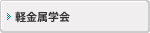
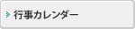

TOPICSの内容が入ります。（2011.1.25）
Please see this section in the iframe-enabled browser.

軽金属学会とは
会長挨拶
沿革と歴史
定款
組織
会員構成
活動報告
入会案内
事務局所在地
運営委員会
総合計画委員会
組織委員会
財務委員会
常設委員会
研究委員会
総務委員会
企画委員会
編集委員会
国際交流委員会
広報委員会
大会運営会議
表彰委員会
参与会
支部とは
支部行事
支部長会
北海道支部
東北支部
関東支部
北陸支部
東海支部
関西支部
中国四国支部
九州支部

講演大会
講演申込
参加申込
概要原稿の書き方
国際会議
参加申込
これまでに開催したシンポジウム・セミナー・基礎技術講座
What's New
最新号目次
過去の目次
J-STAGE
投稿方法
投稿規程
著作権規程
執筆要領
Materials Transactions投稿規程
投稿予備登録
校閲状況確認
表彰
人材育成
若手の会
女性会員の会
若手表彰
若手セミナー
中高教育支援
ロボコン支援
社会人Drアンケート
インターンシップ
公募情報
エッセイ
バックナンバー
リンク
研究室リンク
研究機関リンク
国内リンク
海外リンク
軽金属データベース
アルミニウムデータベース
マグネシウムデータベース
チタンデータベース
入会案内
会費
会員の特典
入会申込書記入の手引
会員データ変更
インターネットサービスとは
サービス内容
利用の手引き
新規登録
ログイン